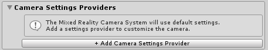
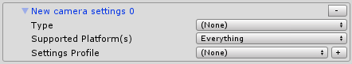
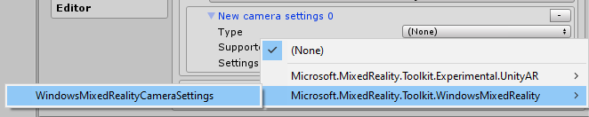
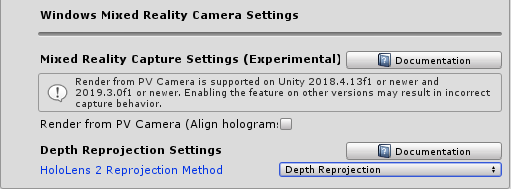

Windows Mixed Reality相机设置提供者
Windows Mixed Reality camera settings provider（相机设置提供者）确定运行应用程序的设备类型，并根据显示（透明或不透明）应用适当的配置设置。
启用Windows Mixed Reality相机设置提供者
以下步骤假定使用MixedRealityToolkit对象。其他服务注册商所需的步骤可能有所不同。
在场景层次中选择MixedRealityToolkit对象。

将Inspector面板导航到“相机系统”部分，然后展开Camera Settings Providers部分。

单击 Add Camera Settings Provider 然后展开新添加的 New camera settings 条目.

选择 Windows Mixed Reality Camera Settings provider

[!注意] 使用Microsoft Mixed Reality Toolkit默认配置文件时，将已启用和配置Windows Mixed Reality相机设置提供者。
配置Windows Mixed Reality相机设置提供者
Windows Mixed Reality相机设置还支持配置文件。此配置文件提供以下选项：

Render Mixed Reality Capture from the photo/video camera (从照片/相机渲染混合现实捕获)
通过HoloLens 2的此设置，您可以在混合现实捕获中启用全息图对齐。如果启用，则在拍摄混合现实捕获的照片或视频时，平台将为应用程序提供一个额外的全息相机。该全息相机提供与照片/相机位置对应的视图矩阵，并使用照片/相机视场提供投影矩阵。这样可以确保全息图（例如手部网格）在视频输出中保持明显对齐。